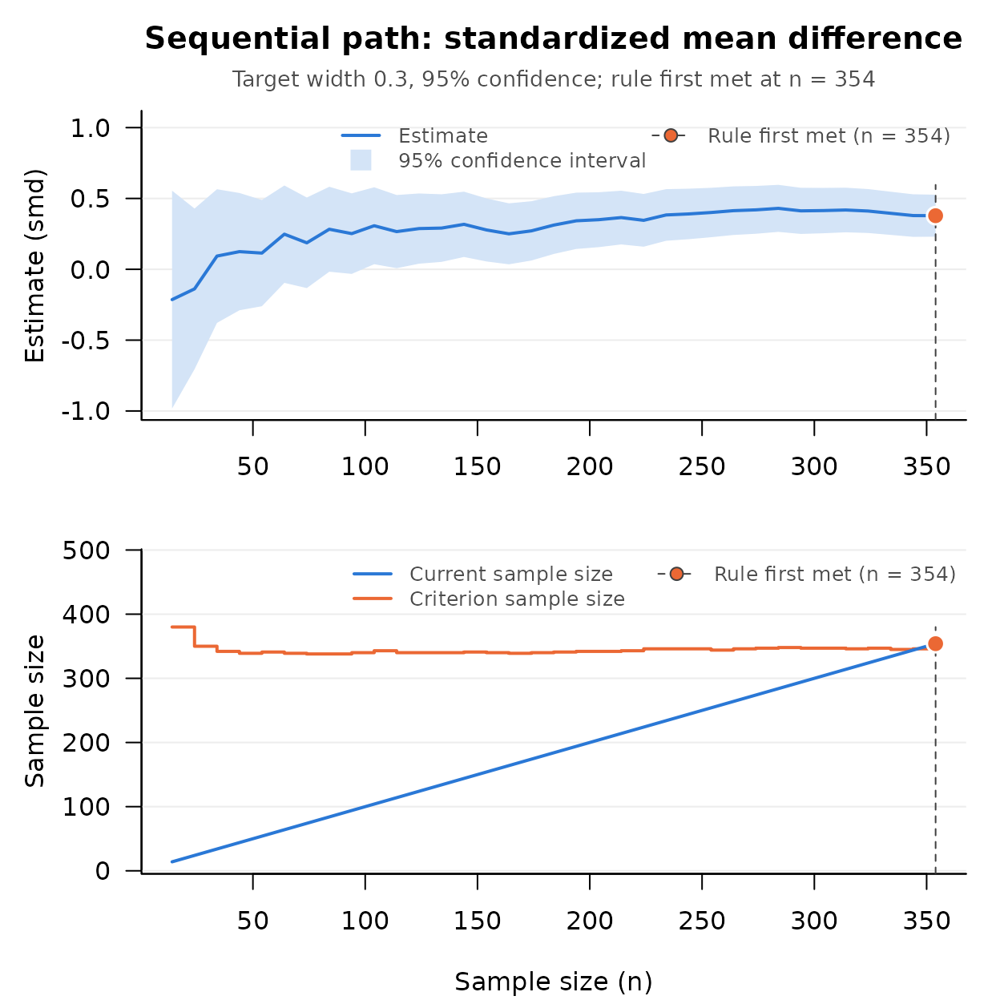

A Step by Step Sequential Workflow: HR Training Effect on Employee Engagement
Source:vignettes/step-by-step-sequential-workflow.Rmd
step-by-step-sequential-workflow.RmdThe Applied Scenario
A management researcher at a regional bank is studying whether a new onboarding program improves the engagement of new hires six months after their start date. Two cohorts are recruited: one assigned to the new program (“treatment”) and one that continues with the existing program (“control”). Engagement is measured on a scale from 1 to 7.
The effect size of interest is the standardized mean difference, δ = (μ1 − μ2) / σ: the difference between the two population means in units of the common standard deviation. The researcher wants to report how large the effect of the program is, with a confidence interval narrow enough to be useful, which is the accuracy in parameter estimation (AIPE) approach to study design (Maxwell, Kelley, & Rausch, 2008).
A fixed sample size plan for that goal (Kelley & Rausch, 2006;
DMAR::ss_aipe_smd()) needs a planning value for δ, which is
the quantity the study is being run to estimate. The sequential AIPE
procedure of Kelley, Darku, and Chattopadhyay (2018) needs none. Data
are collected in stages, and sampling stops at the first stage at which
the stopping rule says the confidence interval is narrow enough. The
procedure is distribution free: it does not assume that engagement
scores are normal.
The Plan
Before any data are collected the researcher fixes three things and writes them down: the target full width of the confidence interval (the upper limit minus the lower limit, which the article calls omega), the confidence level, and how often the stopping rule will be checked. Here the target width is 0.30 at 95% confidence, and the rule will be checked after every 10 new hires per cohort.
target_width <- 0.30
conf_level <- 0.95
batch_size <- 10
m <- seq_aipe_smd_pilot(width = target_width, conf_level = conf_level)
m
#> [1] 14The first stage collects 14 new hires per cohort. The pilot sample
size is the larger of a minimum (m_0, 4 by default, the
fewest observations from which the variance estimate can be computed)
and twice the standard normal quantile for the confidence level, divided
by the target width and rounded up (Kelley, Darku, & Chattopadhyay,
2018, Equation 21):
Stage 1: The Pilot
So that the vignette can be run, the data are simulated from a known population; in a real study each call below is a new group of participants. The program raises mean engagement from 4.5 to 4.8, and the standard deviation is 0.9 in both cohorts, so the population standardized mean difference is 0.3 / 0.9 = 0.33.
set.seed(113)
new_treatment <- function(n) rnorm(n, mean = 4.8, sd = 0.9)
new_control <- function(n) rnorm(n, mean = 4.5, sd = 0.9)
treatment <- new_treatment(m)
control <- new_control(m)
out <- seq_aipe_smd(group_1 = treatment, group_2 = control,
width = target_width, conf_level = conf_level)
out
#> Sequential check (standardized mean difference)
#>
#> Current n : 14
#> Criterion n : 380
#> Target width : 0.3
#> Confidence level: 95%
#> Coverage : asymptotic; assess with sensitivity analysis
#>
#> lower_limit : -0.9828368
#> smd : -0.2140194
#> upper_limit : 0.554798
#> xi_squared : 2.154161
#> criterion_n : 380
#> current_n : 14
#>
#> Stopping rule met: FALSE
attr(out, "is_satisfied")
#> [1] FALSEThe rule is not met. With 14 per cohort the interval is 1.54 wide,
and the criterion sample size, the per cohort sample size the rule
currently asks for, is 380. The criterion is computed from the variance
estimate in the row xi_squared, so it is an estimate too,
and it will move as the data accumulate. The researcher does not collect
380 per cohort and stop; the researcher keeps collecting and
checking.
Stages 2 and Beyond: The Loop
This loop is the study. Each pass recruits one more batch per cohort
and calls seq_aipe_smd() on all of the data collected so
far. The cap on the number of stages stands in for whatever practical
limit a real study has; if the cap ended the loop, the rule would not
have been met, and the width of the interval would not be
guaranteed.
max_stages <- 60
for (stage in seq_len(max_stages)) {
treatment <- c(treatment, new_treatment(batch_size))
control <- c(control, new_control(batch_size))
out <- seq_aipe_smd(group_1 = treatment, group_2 = control,
width = target_width, conf_level = conf_level)
if (attr(out, "is_satisfied")) break
}
stage
#> [1] 34
out
#> Sequential check (standardized mean difference)
#>
#> Current n : 354
#> Criterion n : 346
#> Target width : 0.3
#> Confidence level: 95%
#> Coverage : asymptotic; assess with sensitivity analysis
#>
#> lower_limit : 0.2301056
#> smd : 0.3782458
#> upper_limit : 0.526386
#> xi_squared : 2.022334
#> criterion_n : 346
#> current_n : 354
#>
#> Stopping rule met: TRUEThe rule was met after 34 batches, at 354 new hires per cohort. The estimate is 0.378 with a 95% confidence interval from 0.230 to 0.526. Its width, 0.296, is within the target of 0.30, as it must be once the rule is met, and the interval contains the population value of 0.33 from which the data were simulated.
The Same Path in One Call
When the data are already in hand, seq_path() does what
the loop did: it applies the check function at each successive sample
size and returns every stage. All of the data go in its second argument,
in the order in which they were collected. With
by = batch_size it checks at the same stages as the study,
starting from the pilot sample size.
path <- seq_path(seq_aipe_smd,
list(group_1 = treatment, group_2 = control),
width = target_width, conf_level = conf_level,
by = batch_size)
path
#> Sequential path: standardized mean difference
#>
#> Stages checked : 35 (n = 14 to 354 by 10)
#> First check at : the pilot sample size
#> Target width : 0.3
#> Confidence level: 95%
#> Rule first met : n = 354
#> Estimate there : smd = 0.3782458 [0.2301056, 0.526386]
#>
#> n estimate lower_limit upper_limit criterion_n is_satisfied
#> 14 -0.21401939 -0.9828368 0.5547980 380 FALSE
#> 24 -0.13823942 -0.7052064 0.4287275 350 FALSE
#> 34 0.09338799 -0.3782084 0.5649844 342 FALSE
#> ...
#> 334 0.39514863 0.2428544 0.5474428 345 FALSE
#> 344 0.37920797 0.2290663 0.5293496 346 FALSE
#> 354 0.37824583 0.2301056 0.5263860 346 TRUE
#>
#> The estimate to report is the one at n = 354.The stopping point is the one the loop found. The plot()
method shows the interval narrowing toward its target and the sample
size reaching the criterion.
plot(path)
A path also answers a question the loop cannot: what did checking
only after every 10 new hires cost? With the default by = 1
the rule is evaluated after every new hire per cohort.
path_one <- seq_path(seq_aipe_smd,
list(group_1 = treatment, group_2 = control),
width = target_width, conf_level = conf_level)
attr(path_one, "stop_n")
#> [1] 346Checked after every observation, the rule would first have been met
at 346 per cohort; checked after every batch it was met at 354. Checking
in batches cost this study 8 new hires per cohort, and its interval is a
little narrower for them. (In simulations reported in
?seq_aipe_sensitivity, checking after every batch cost
about half a batch per group on average.) That comparison is a
description of this study after the fact. It is not a way to choose a
stopping point: the estimate to report is the one at the stage where the
study, run as planned, stopped. ?seq_path explains why a
later or more favorable stage may not be substituted.
Reporting
seq_report() turns a check or a path into the paragraph
a methods section needs, with the reference.
seq_report(path)
#> Sample size was determined with the sequential accuracy in parameter
#> estimation procedure for the standardized mean difference (Kelley,
#> Darku, & Chattopadhyay, 2018), with a target full width of 0.3 for the
#> 95% confidence interval. The stopping rule was evaluated from the pilot
#> sample size (n = 14 per group) onward, after every 10 additional
#> observations per group, and was first met at n = 354 per group. At that
#> sample size the estimate of the standardized mean difference was 0.378,
#> 95% CI [0.230, 0.526]. The confidence level is asymptotic; meeting the
#> width target does not establish nominal coverage at this sample size.
#>
#> Reference
#> Kelley, K., Darku, F. B., & Chattopadhyay, B. (2018). Accuracy in
#> parameter estimation for a general class of effect sizes: A
#> sequential approach. Psychological Methods, 23(2), 226–243.
#> doi:10.1037/met0000127The paragraph says what a reader needs to evaluate the result: the procedure, the target width and confidence level, where checking began and how often the rule was checked, the sample size at which it was met, and the estimate with its interval. Naming the procedure matters because the final sample size was determined by the data, and the properties of the interval are those of the interval at the stopping point of this rule.
Those properties are of two kinds. The width is at most the target
whenever the rule is met; that holds in every sample. The coverage
approaches the confidence level as the target width narrows and the
final sample grows (Kelley, Darku, & Chattopadhyay, 2018, Theorem 2;
Theorem 4 states it for the standardized mean difference), and the final
sample size approaches the one a fixed sample size plan would have used
had the population values been known (their Lemma 3). For a standardized
mean difference of moderate size the approximation is good at targets
like this one: in simulations of the procedure as shipped, 95% intervals
contained a population value of 0.5 in 0.952 of studies at a target
width of 0.4 and in 0.946 at a width of 0.2 for normal data, and in
0.944 and 0.949 for right skewed data (6,000 and 2,000 studies; see
?seq_aipe_smd). To see what to expect for a particular
design before collecting data, use
seq_aipe_smd_sensitivity(), described in
vignette("sensitivity-analysis", package = "SMSD").
Comparison With a Fixed Sample Size Plan
Had the researcher known that the population standardized mean
difference was 0.33, a fixed sample size plan for the same target would
have been available from DMAR. ss_aipe_smd() takes the
planning value delta, the confidence level, and the width;
it has no argument for the standard deviation, because δ is already in
standard deviation units.
fixed <- DMAR::ss_aipe_smd(delta = 0.3 / 0.9, conf_level = conf_level,
width = target_width)
print(fixed)
#> term value
#> necessary_n_per_group 347
#> supposed_smd 0.333
#> width 0.3
#>
#> Confidence level: 95%The fixed plan asks for 347 per cohort. The sequential study, which was told nothing about δ, stopped at 354 (and would have stopped at 346 had it checked after every observation). The difference between the two approaches is not the sample size they reach when the planning value is right. It is what happens when the planning value is wrong:
planning_values <- c(0, 0.3 / 0.9, 0.8)
n_planned <- sapply(planning_values, function(delta) {
plan <- DMAR::ss_aipe_smd(delta = delta, conf_level = conf_level,
width = target_width)
plan$value[plan$term == "necessary_n_per_group"]
})
data.frame(planning_value = round(planning_values, 2),
n_per_cohort = n_planned)
#> planning_value n_per_cohort
#> 1 0.00 342
#> 2 0.33 347
#> 3 0.80 369A researcher who planned for no effect when the population value was 0.8 would have collected 342 per cohort where 369 were needed, and the interval would be expected to come out wider than 0.30. The sequential study has no planning value to get wrong. For the standardized mean difference the required sample size depends only mildly on δ, so the penalty is small. It is larger for effect sizes whose sampling variance depends strongly on the population value. For a correlation at a target width of 0.20, for example, the fixed plan changes by more than a hundred pairs between planning values of 0.1 and 0.5:
sapply(c(0.1, 0.5), function(rho) {
plan <- DMAR::ss_aipe_r(rho = rho, width = 0.20, conf_level = conf_level)
plan$value[plan$term == "necessary_N"]
})
#> [1] 378 219What a sequential design asks in return is attention to the target
width and the pilot sample size, because its coverage guarantee is
asymptotic;
vignette("seq-aipe-correlations", package = "SMSD") takes
that up for the correlation.
Practical Questions
What if the cohorts become unequal? The stopping
rule is stated for the same number of observations in each group, and
seq_aipe_smd() stops with an error when the two groups
differ in size (seq_aipe_c() does the same for the groups
of a contrast). A study that loses a participant from one cohort
recruits until the cohorts are level again. Until they are, the rule can
be checked on the first n observations of each cohort in the
order in which they were collected, where n is the size of the
smaller cohort. Which observations wait is settled by their order and
never by their values.
What if the study has a limit it cannot pass? Write
the limit into the plan, as the loop above does with its cap on the
number of stages. If the limit ends the study before the rule is met,
attr(out, "is_satisfied") is FALSE, the width
of the interval is not guaranteed, and the report says that sampling
ended at the limit and not by the rule. seq_report()
describes a check whose rule is not met as a study still under way, so
that sentence of its paragraph is rewritten by hand. A design with a
limit can be studied in advance: the
seq_aipe_*_sensitivity() functions take the limit as
max_n, and the row pct_hit_max_n of their
summary is the percentage of simulated studies that the limit ended.
What may be done with the data afterward? The result of the procedure is the estimate and the interval at the stage where the study, run as planned, stopped, and the width and the coverage discussed above belong to that interval. Other analyses of the same data, such as another effect size or a significance test, are ordinary secondary analyses of a sample whose size the data determined: nothing in the procedure gives their intervals a width, and a report of them says how the sample size was arrived at. Collecting more observations and estimating again is a different procedure from the one planned, as is choosing among the stages of a path.
Connections to the Rest of SMSD
Every sequential procedure in the package has a pilot function, a
check function called after each stage, and seq_report()
for the write-up. seq_path() replays data in hand for the
purely sequential procedures, in which every group grows by the same
number of observations at each stage (for seq_aipe_R2() the
pilot sample size is supplied as start, because it depends
on the number of predictors). It does not apply to the two stage
procedures, which have no stage by stage path, or to the two designs
whose groups grow at different rates: seq_mr_smd() with two
costs, and the budget procedure, whose loop is written with
seq_budget_next().
-
Correlation coefficients:
seq_aipe_r()for a Pearson, Kendall, or Spearman correlation, andseq_aipe_R2()for the squared multiple correlation (Kelley, Darku, & Chattopadhyay, 2019). Example: how strongly time on task relates to a usability score. Seevignette("seq-aipe-correlations", package = "SMSD"), which also explains why these procedures need narrower targets than the standardized mean difference does. -
Coefficient of variation:
seq_aipe_cv()for the relative variability of a positive quantity, for example hospital length of stay. -
Regression slope:
seq_aipe_reg_coef()for the slope of a simple linear regression, for example hours of tutoring predicting a test score. -
Standardized mean:
seq_aipe_sm()for a mean in standard deviation units, for example a standardized mean change from pretest to posttest. -
Contrast:
seq_aipe_c()for a contrast among the means of two or more groups, for example one condition against the average of two others. -
Gini index:
seq_aipe_gini()for the inequality of incomes or sales (Chattopadhyay & De, 2016). -
Minimum risk:
seq_mr_smd()andseq_mr_cv()stop when the cost of sampling plus the cost of estimation error is smallest, for studies in which each observation has a price (Chattopadhyay & Kelley, 2016, 2017). Seevignette("mrpe-smd", package = "SMSD")andvignette("mrpe-cv", package = "SMSD"). -
A budget across groups:
seq_budget()withseq_budget_next()estimates a contrast among K groups as precisely as a fixed budget allows when the groups cost different amounts to sample, for example training formats with different costs per trainee (Chattopadhyay, Bandyopadhyay, Kelley, & Padalunkal, 2025). Seevignette("seq-budget", package = "SMSD").
References
Chattopadhyay, B., Bandyopadhyay, T., Kelley, K., & Padalunkal, J. J. (2025). A sequential approach for noninferiority or equivalence of a linear contrast under cost constraints. Psychological Methods, 30(2), 425–439. doi:10.1037/met0000570
Chattopadhyay, B., & De, S. K. (2016). Estimation of Gini index within pre-specified error bound. Econometrics, 4(3), 30. doi:10.3390/econometrics4030030
Chattopadhyay, B., & Kelley, K. (2016). Estimation of the coefficient of variation with minimum risk: A sequential method for minimizing sampling error and study cost. Multivariate Behavioral Research, 51(5), 627–648. doi:10.1080/00273171.2016.1203279
Chattopadhyay, B., & Kelley, K. (2017). Estimating the standardized mean difference with minimum risk: Maximizing accuracy and minimizing cost with sequential estimation. Psychological Methods, 22(1), 94–113. doi:10.1037/met0000089
Kelley, K., Darku, F. B., & Chattopadhyay, B. (2018). Accuracy in parameter estimation for a general class of effect sizes: A sequential approach. Psychological Methods, 23(2), 226–243. doi:10.1037/met0000127
Kelley, K., Darku, F. B., & Chattopadhyay, B. (2019). Sequential accuracy in parameter estimation for population correlation coefficients. Psychological Methods, 24(4), 492–515. doi:10.1037/met0000203
Kelley, K., & Rausch, J. R. (2006). Sample size planning for the standardized mean difference: Accuracy in parameter estimation via narrow confidence intervals. Psychological Methods, 11(4), 363–385. doi:10.1037/1082-989X.11.4.363
Maxwell, S. E., Kelley, K., & Rausch, J. R. (2008). Sample size planning for statistical power and accuracy in parameter estimation. Annual Review of Psychology, 59, 537–563. doi:10.1146/annurev.psych.59.103006.093735